SIDEBY · ACAD 183 PRODUCT MANAGEMENT · CONCEPT
SideBy
Your second pair of eyes. Relationship-safety support that dating apps offer inside their messaging.

- ROLE
- Concept, brand, research
- TIMELINE
- September to November 2026
- TEAM
- Team of 5
- SKILLS
- Brand identity · Pitch design · Competitive analysis · Expert interviews · Financial modeling
MY PART
- Co-created the concept
- Designed the brand identity and investor pitch deck
- Ran the competitive analysis that sparked our B2B2C pivot
- Interviewed USC Associate Professor of Clinical Education, expert on coercive control
- Researched the AI trends that make it possible
- Co-built the financial pro forma
02 · OUTCOMES
What we tested and learned
A full pitch deck and prototype screens, built from the ground up in ACAD 183.
The competitive analysis turned a paid safety app into a tool platforms license, free for users.
To break even in our financial model, on a $1.4M raise.
Pattern detection is the core idea and still untested. Next step: one platform, one opt-in pilot.
03 · CONTEXT
Starting from the UN goals
We began with UN SDGs 5 (gender equality) and 16 (peace, justice and strong institutions), but every path led back to policy problems we couldn’t solve as students.
So we zoomed in on one moment: an online conversation that starts to feel off.
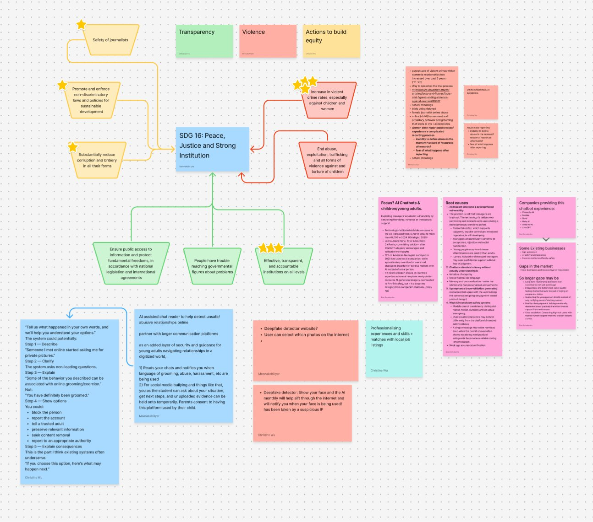
04 · PROBLEM
Most uncomfortable conversations don’t start with a red flag
Control builds slowly: intense attention, pressure on your time, small shifts in tone. One message is easy to dismiss. Together, they’re a pattern.
Help exists once something is clearly wrong. Almost nothing helps in the early, unclear stage.
women under 50 who date online say someone kept contacting them after they said no.Pew Research Center, 2023
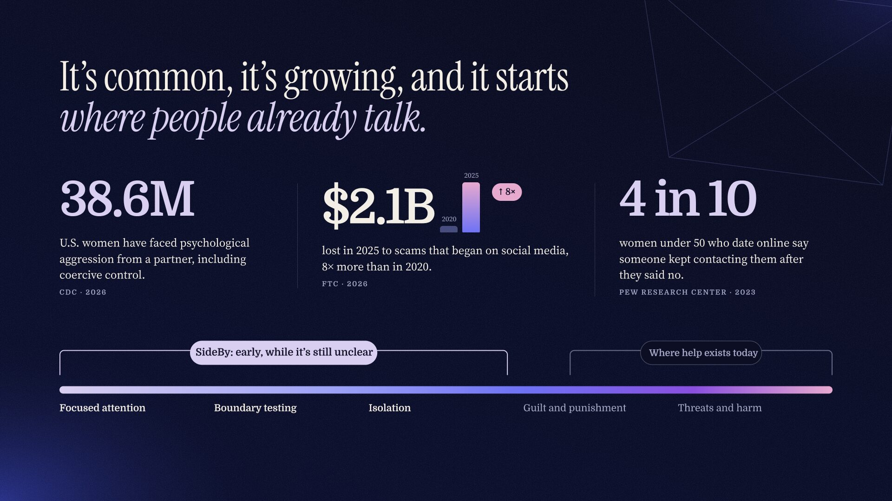
05 · SOLUTION PREVIEW
Meet SideBy
You choose which messages SideBy reviews. It flags possible patterns, points to the exact messages behind them, and says what it can’t tell, because it shouldn’t replace your judgment.
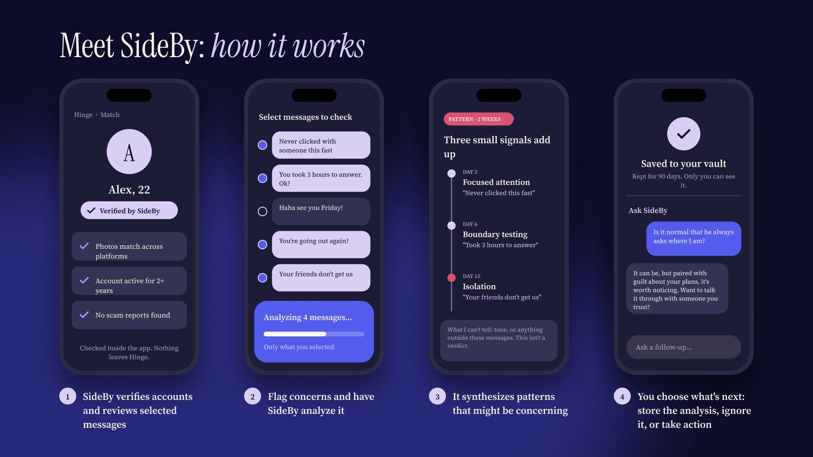
06 · RESEARCH
Talking to the people who know
We talked to two USC students who date online, and I interviewed Dr. Catherine M. Barrett, Associate Professor of Clinical Education at USC, about coercive control. She walked us through how it escalates: focused attention, boundary testing, isolation, guilt, then humiliation.
“You want to be able to catch it in the early stages.”Dr. Catherine M. Barrett, USC
One student wanted AI to “compute all sides” and show where it could be wrong, instead of handing her a verdict. That became a core principle.
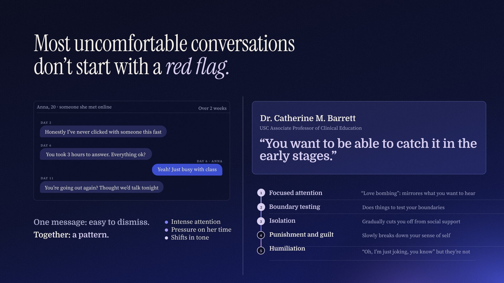
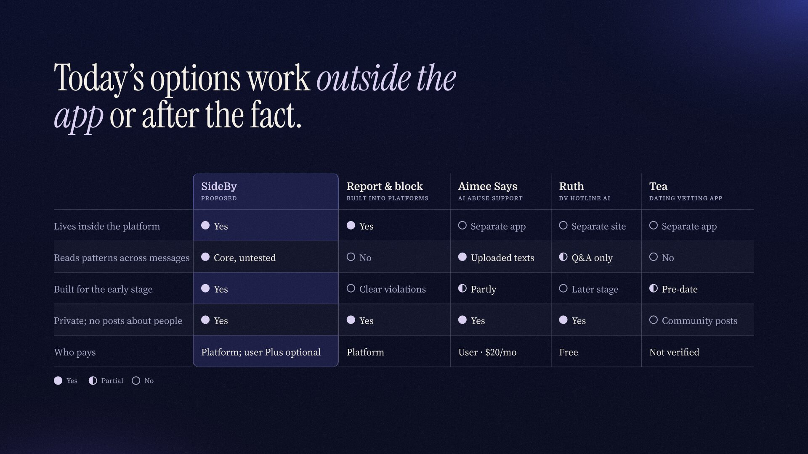
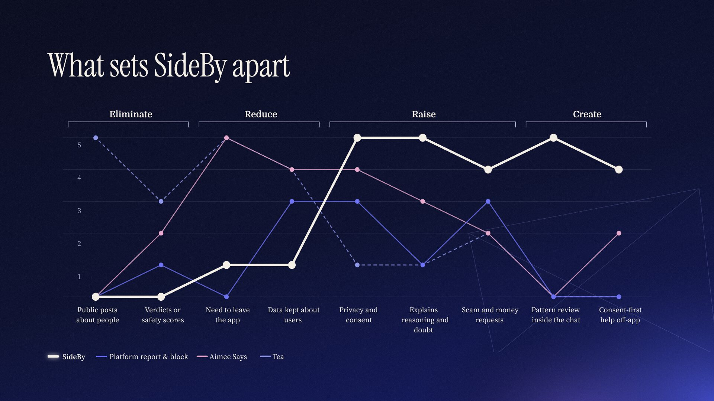
The competitive analysis, and where SideBy sits apart from it.
07 · SOLUTION
Four decisions that shaped it
Users choose which messages SideBy sees. Nothing is read in the background.
Every flag points to the exact messages behind it and says what SideBy can’t tell, so it supports your judgment instead of replacing it.
Users wanted help reading a situation, not a ruling on a person.
Dating apps license SideBy, so it’s free and lives where conversations already happen.
Then you decide: set a boundary, talk to someone you trust, find support, report, or ignore it.
08 · ITERATIONS FOR SCALE
From VeriDate to SideBy
Our first version was VeriDate: a standalone app users would pay for. While I was doing the competitive analysis, we realized it wasn’t unique and looked like a trap idea, since 18–24-year-olds are less willing to pay for safety tools. So we reframed it into SideBy.
- A standalone app
- Users pay for it
- Not unique among safety tools
- Inside the apps people already use
- Platforms license it, free for users
- Lives where conversations happen
↻ Click the card or the switch to compare
OUR FINANCIAL MODEL
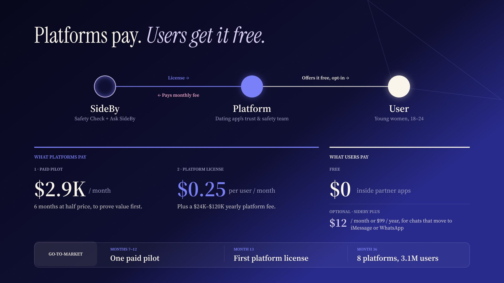
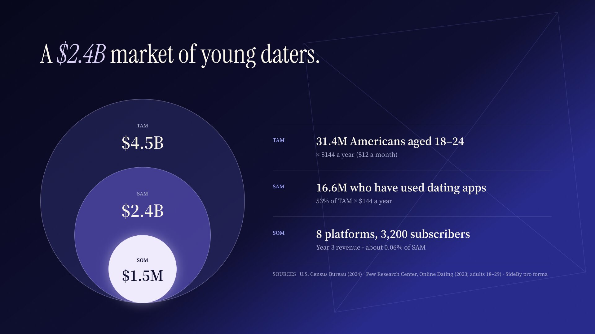
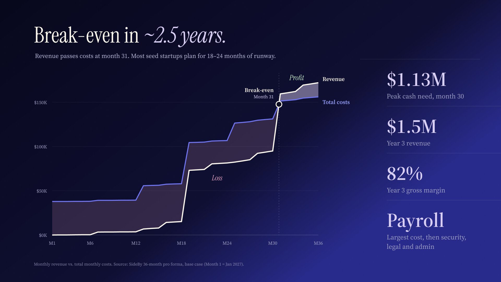
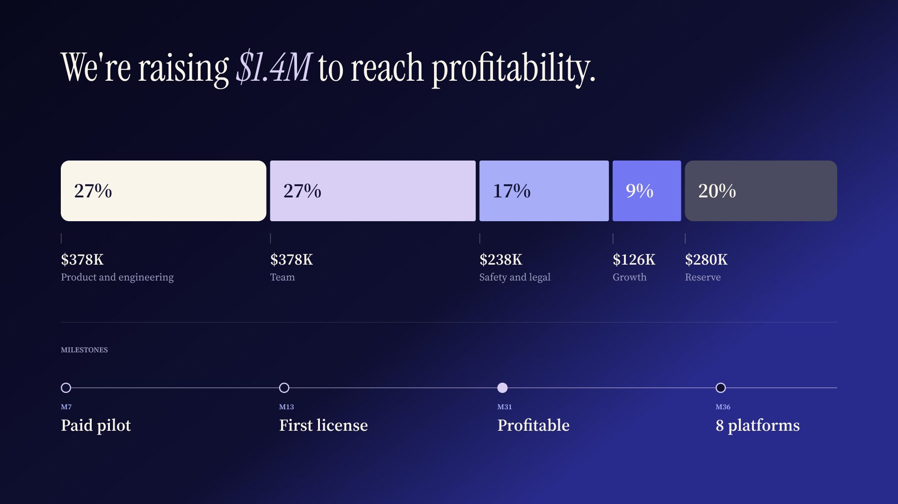
Next step: one platform, one opt-in pilot.
09 · TAKEAWAYS
What I’m taking with me
- A big problem isn’t the same as a good idea. The value is in finding the version you can actually build, and that nobody else is already doing.
- Help people read a situation, don’t hand them a verdict. That came straight from our interviews, and it shaped how every flag in SideBy is written.
10 · THANKS FOR READING :)
More work
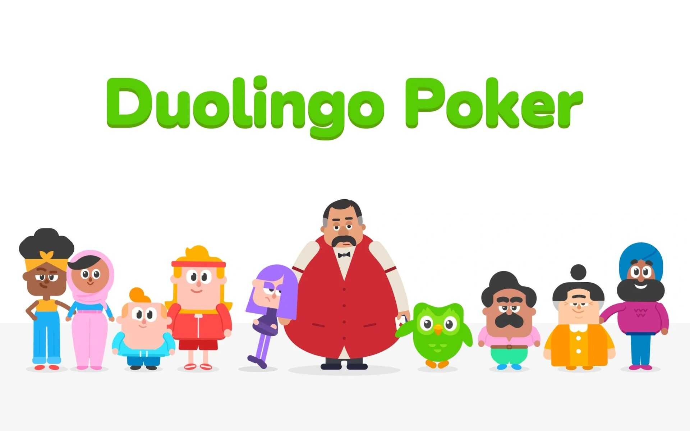
DuoPoker Concept · 2026Poker on Duolingo, taught by a dealer who has seen every hand.
 EcoPinet Piloted · 2025
EcoPinet Piloted · 2025
Packaging made from pineapple waste, with seeds inside.